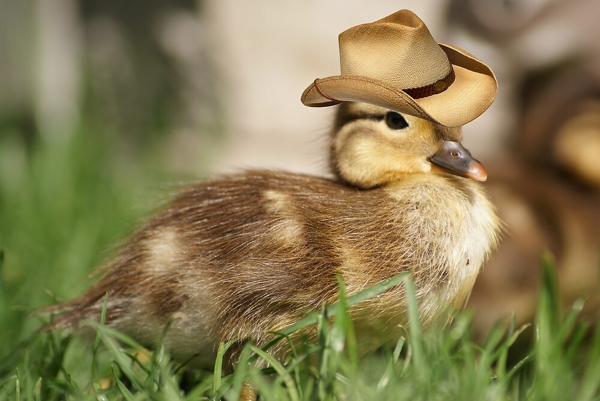

What are some of the advantages of keeping ducks as pets? They're flamboyant feathery balls of energy! Each one is unique, and getting to know them as people is a lot of fun.
They lay eggs as well, although they are more consistent than chickens. They are relatively long-lived pets, with the potential to live for 10-15 years if properly cared for.
Keep in mind that they produce a significant amount of manure. As a result, if you have a garden, they make excellent pets. They're also less destructive to your lawn and landscaping than hens. They also eat a lot of insects in the process!
What do you call a duck that steals things from the bathroom?
Why did the duck cross the playground? To get to the other slide.
Why do ducks fly south for the winter? It's too far to waddle.
Why do ducks lay eggs? They would break if they dropped them.
Why do ducks quack? Well, because they can't oink, or moo, or bark.
Why do ducks fly south for the winter? It's too far to waddle.
Why did the duck cross the road? To show the chicken how to do it.